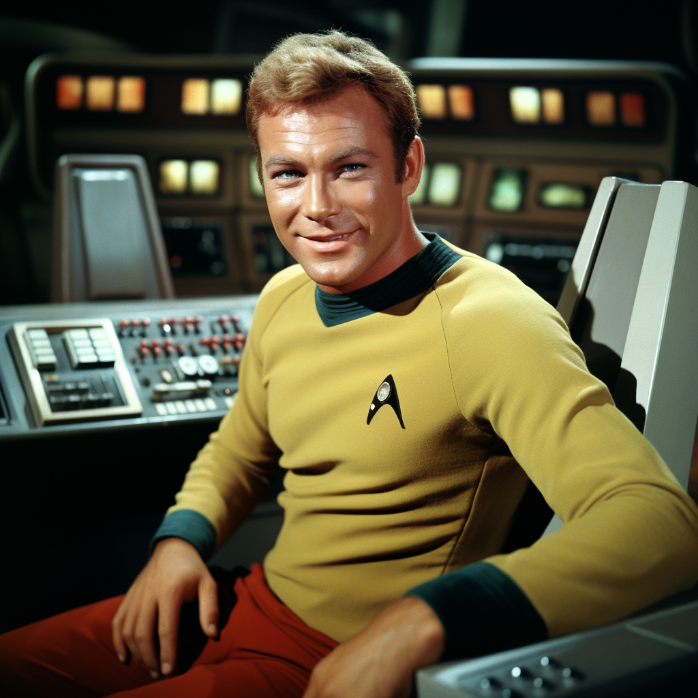
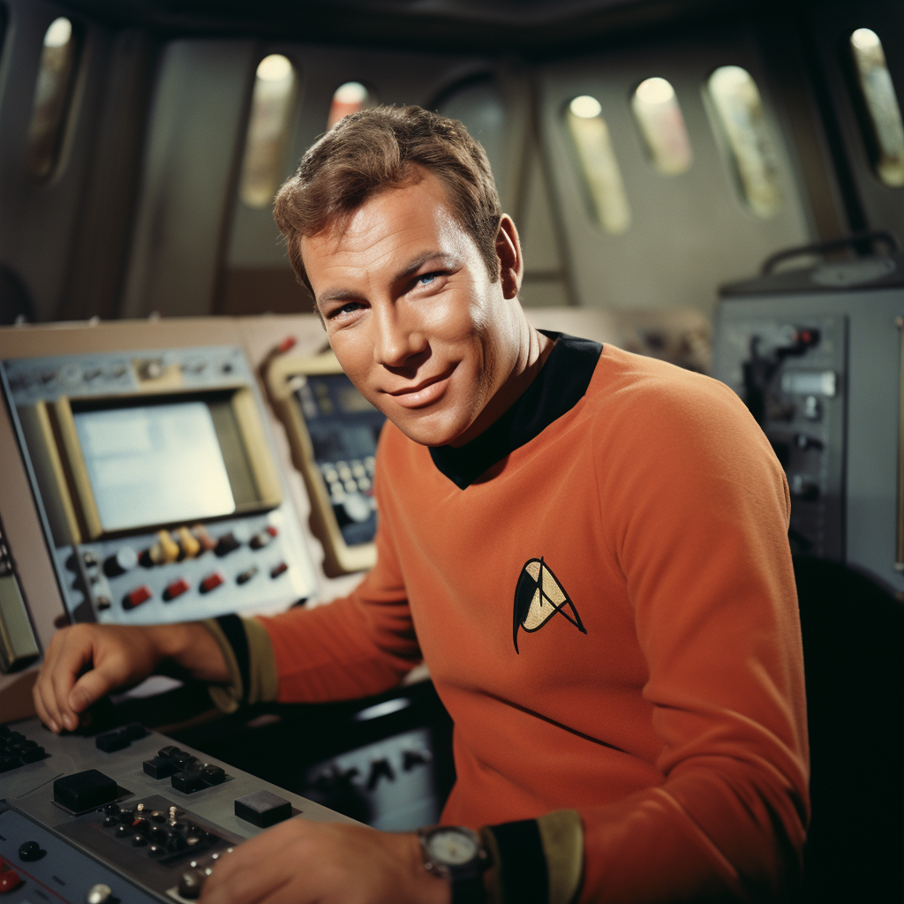
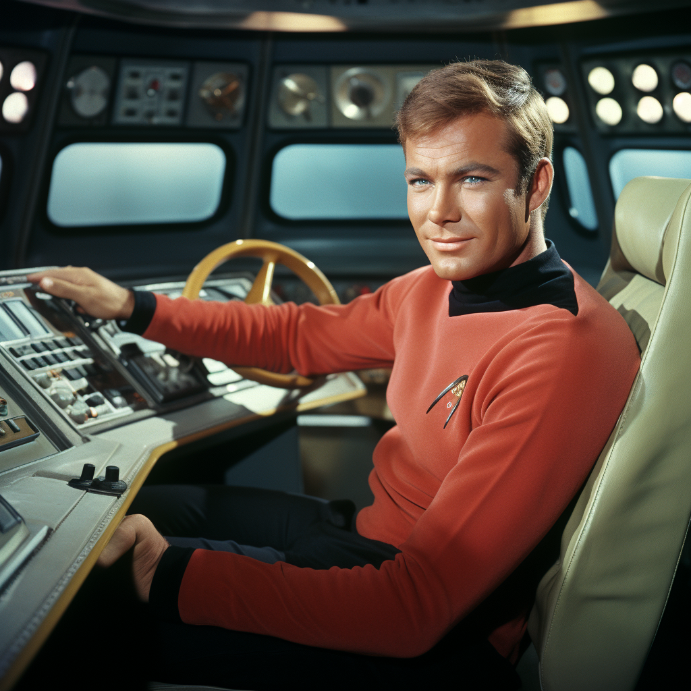
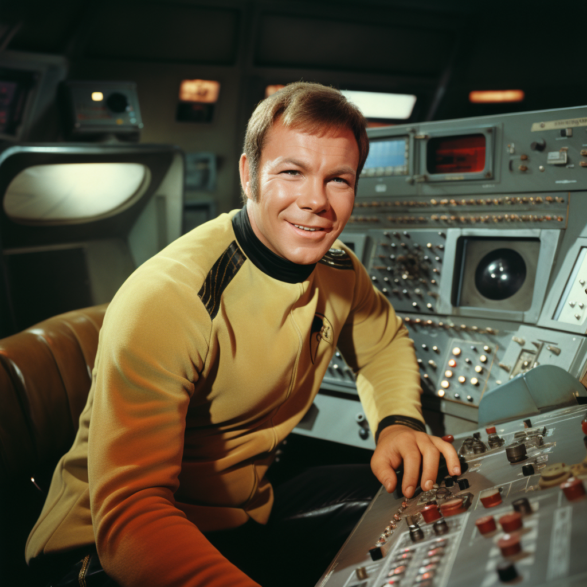
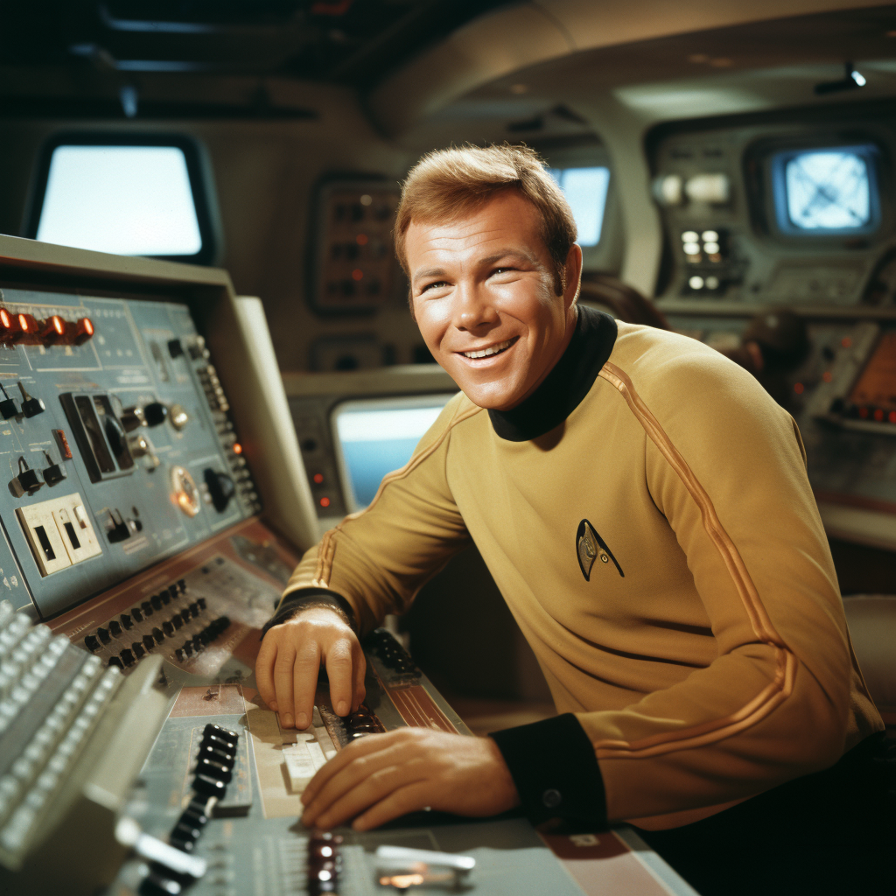
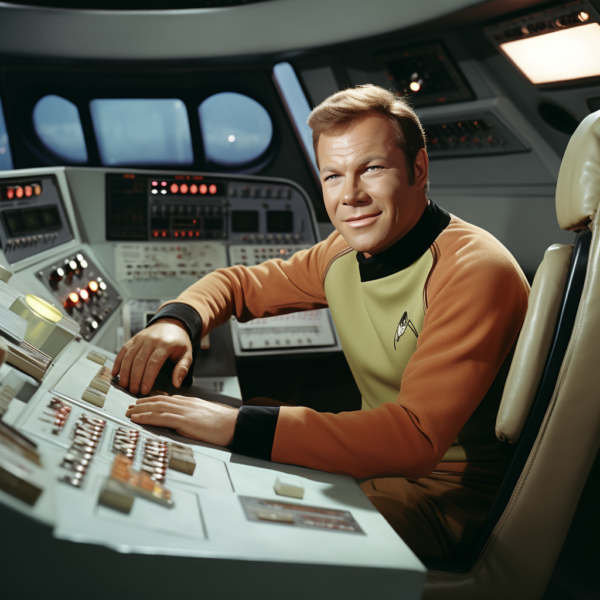
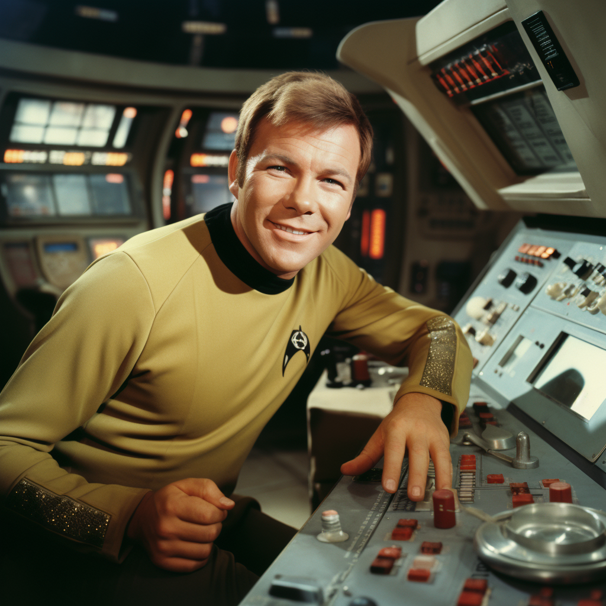

Visual development
Captain of Persuasion / Kirk
A focused local review collection containing 18 Captain Kirk bridge portraits and one OBJ model. These are candidates—not yet approved production assets.
Portrait candidates







